import torch
import torch.distributions as dist
import matplotlib.pyplot as plt
import seaborn as sns
from weighted_sampling import (
model,
sample,
observe,
deterministic,
summary,
expectation,
)
torch.manual_seed(42)Exercise 5: Inverse Physics
physics simulation maps initial conditions to outcomes — launch a projectile at angle \(\theta\) and it lands at range \(R(\theta)\). In this exercise we solve the inverse problem: given a measured outcome, what were the initial conditions? Using the WeightedSampling.torch library, we:
- Simulate forward —
sampleunknown parameters from a prior and run the physics to see what outcomes are possible. - Condition on data — add an
observestatement to turn prior samples into weighted posterior samples that are consistent with the observation. - Extract derived quantities — plug posterior samples into any function and summarize with histograms or expectations.
We work through two scenarios of increasing complexity.
NotePrerequisites: Python libraries
This exercise uses the following libraries:
WeightedSampling.torch — for probabilistic programming and inference. Install via:
pip install git+https://github.com/MariusFurter/WeightedSampling.torch.gitPyTorch — for tensor operations. A short tutorial can be found in the Appendix.
matplotlib — for plotting.
seaborn — for statistical visualization.
If any packages are missing, run pip install torch matplotlib seaborn in your terminal.
Setup
NoteTorch compatibility reminder
Because the inference engine runs all \(N\) particles simultaneously via PyTorch broadcasting, any computation on sampled values must use torch-compatible operations. Use torch.sin(x) instead of math.sin(x), torch.where(cond, a, b) instead of Python if/else, etc. See the appendix for details.
Vignette 1: Lunar Cargo Delivery
A research station on the Moon uses a supply launcher to deliver cargo to remote landing zones across the lunar surface. The launcher gives the cargo an initial kick at a fixed speed \(v_0 = 20\;\text{m/s}\), but at a variable launch angle \(\theta\) (in radians). After launch the cargo follows a ballistic trajectory in the Moon’s gravity (\(g_{\text{moon}} = 1.62\;\text{m/s}^2\)).
A sensor at the landing zone recorded that cargo arrived \(R_{\text{obs}} = 200\;\text{m}\) from the launcher. What was the launch angle \(\theta\)?
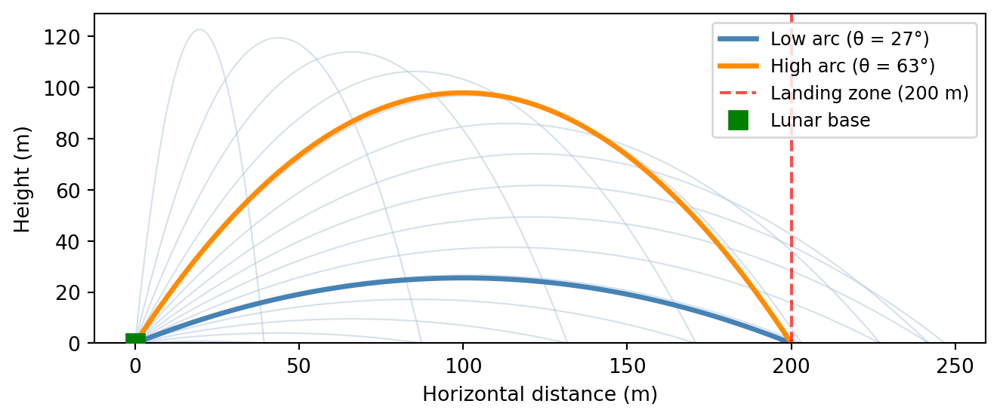
The range of a ballistic trajectory is given by: \[ R(\theta) = \frac{v_0^2 \sin(2\theta)}{g} \]
This function is non-injective: two different angles produce the same range.
NoteProvided helper functions: ballistic trajectory
The following functions are provided for you. Run this cell before starting the tasks.
def compute_range(v0, theta, g=1.62):
"""Compute the range of a ballistic projectile (flat ground).
Args:
v0: initial speed (scalar or tensor)
theta: launch angle in radians (scalar or tensor)
g: gravitational acceleration (default: lunar gravity, 1.62 m/s²)
Returns:
Range R = v0² sin(2θ) / g
"""
return v0**2 * torch.sin(2 * theta) / g
def compute_trajectory(v0, theta, g=1.62, n_points=100):
"""Compute the (x, y) trajectory of a ballistic projectile.
Args:
v0: initial speed (scalar)
theta: launch angle in radians (scalar)
g: gravitational acceleration (default: lunar gravity)
n_points: number of time steps
Returns:
(xs, ys) — 1-D tensors of shape (n_points,)
"""
t_flight = 2 * v0 * torch.sin(theta) / g
t = torch.linspace(0, float(t_flight), n_points)
xs = v0 * torch.cos(theta) * t
ys = v0 * torch.sin(theta) * t - 0.5 * g * t**2
return xs, ysTask 1a: Forward simulation
A model with only sample statements (no observe) draws from the prior — our beliefs about the parameters before any data is observed. Running such a model produces unweighted samples that we can use to explore what outcomes the physics allows.
Part 1. Write a @model function lunar_launch() that:
- Samples a launch angle \(\theta \sim \text{Uniform}(0, \pi/2)\).
- Computes the range \(R\) using
compute_range(v0, theta)with \(v_0 = 20\) and the lunar gravity \(g_{\text{moon}} = 1.62\;\text{m/s}^2\).
Run the model with num_particles=5000 and inspect the result. What data does the results object record? Use summary() to print statistics.
Part 2. Select 20 random particles from the result and plot their trajectories (use compute_trajectory) on a single figure.
Part 3. Plot a histogram of the range \(R\) for all particles. Can you explain the shape of the histogram from the shape of \(R(\theta) = v_0^2 \sin(2\theta)/g\)?
NoteHint: Step-by-step approach
Part 1 — writing and running the model:
Define constants
v0 = 20.0andg_moon = 1.62.Write a function decorated with
@model. Inside the function, usesample("theta", dist.Uniform(0, torch.pi / 2))to draw a launch angle, then callcompute_range(v0, theta, g=g_moon)to compute the range.Call the model with
num_particles=5000:result = lunar_launch(num_particles=5000)The
resultobject is dictionary-like. Usesummary(result)to print statistics.
Part 2 — plotting trajectories:
- Extract the angles:
thetas = result["theta"]. - Pick 20 random indices:
idx = torch.randperm(len(thetas))[:20]. - Loop over the selected indices, calling
compute_trajectory(v0, thetas[i], g=g_moon)for each, and plot withax.plot(xs, ys).
Part 3 — histogram of ranges:
- Compute ranges for all particles at once:
ranges = compute_range(v0, thetas, g=g_moon). This works becausecompute_rangeis vectorized via PyTorch. - Plot with
ax.hist(ranges, bins=60, density=True, ...). - To understand the shape, think about the graph of \(R(\theta)\): where is it flat, and where is it steep? How does that affect how uniform samples in \(\theta\) get mapped to values of \(R\)?
TipSolution
v0 = 20.0 # m/s
g_moon = 1.62 # m/s²
R_obs = 200.0 # m
@model
def lunar_launch():
theta = sample("theta", dist.Uniform(0, torch.pi / 2))
R = compute_range(v0, theta, g=g_moon)
result = lunar_launch(num_particles=5000)
print(result)
print(summary(result)){'theta': tensor([1.4373, 0.6014, 1.5069, ..., 0.5365, 0.8242, 1.3271]), 'log_evidence': tensor(0.), 'log_weights': tensor([0., 0., 0., ..., 0., 0., 0.])}
{'theta': {'mean': tensor(0.7805), 'std': tensor(0.4513), 'n_unique': 5000}}The results object records 5000 samples of theta, along with 5000 log_weights (which are all zero since there are no observe statements), and a log_evidence of 0.0 (once there are observe statements, this will be the log marginal likelihood of the data under the model).
Note that the range R is not recorded in the results object since it is not a sampled variable. Hence computing R does not actually have any effect in this program. It will be important in the next task, once we observe R.
If you want to record the result of the deterministic calculation, you can use R = deterministic("R", compute_range(v0, theta, g=g_moon)) instead of a plain assignment. However, usually it is more efficient to compute derived quantities like R on the fly from the sampled variables when needed, rather than storing them in the results object.
Next, we plot 20 randomly selected trajectories from the prior. These reflect our beliefs about how typical trajectories look given a uniform prior over \(\theta\).
Code
thetas = result["theta"]
idx = torch.randperm(len(thetas))[:20]
fig, ax = plt.subplots(figsize=(6, 3))
for i in idx:
xs, ys = compute_trajectory(v0, thetas[i], g=g_moon)
ax.plot(xs, ys, linewidth=1.5)
ax.set_xlabel("Horizontal distance (m)")
ax.set_ylabel("Height (m)")
ax.set_ylim(bottom=0)
plt.tight_layout()
plt.show()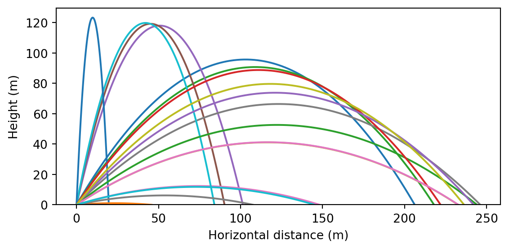
We plot a histogram of the prior distribution of ranges, with \(R_{\text{obs}}\) marked:
Code
ranges = compute_range(v0, result["theta"], g=g_moon)
fig, ax = plt.subplots(figsize=(6, 3))
ax.hist(ranges, bins=60, density=True, color="steelblue",
edgecolor="white", linewidth=0.5, alpha=0.8)
ax.axvline(R_obs, color="red", linestyle="--", linewidth=2,
label=f"$R_{{\\mathrm{{obs}}}}$ = {R_obs} m")
ax.set_xlabel("Range (m)")
ax.set_ylabel("Density")
ax.legend()
plt.tight_layout()
plt.show()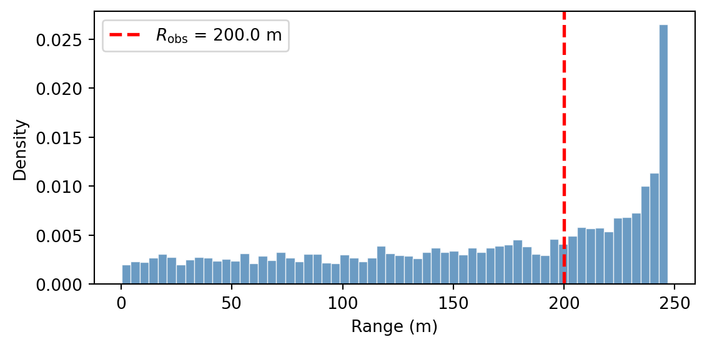
The density piles up near \(R_{\max} = v_0^2/g \approx 247\;\text{m}\). To see why, look at the graph of \(R(\theta)\):
Code
# Explanation: the range function R(θ)
theta_grid = torch.linspace(0, torch.pi / 2, 200)
R_grid = compute_range(v0, theta_grid, g=g_moon)
fig, ax = plt.subplots(figsize=(6, 3))
ax.plot(theta_grid, R_grid, color="steelblue", linewidth=2)
ax.axhline(
R_obs,
color="red",
linestyle="--",
linewidth=1.5,
alpha=0.7,
label=f"$R_{{\\mathrm{{obs}}}}$ = {R_obs} m",
)
ax.set_xlabel("Launch angle θ (rad)")
ax.set_ylabel("Range R (m)")
ax.legend(fontsize=9)
plt.tight_layout()
plt.show()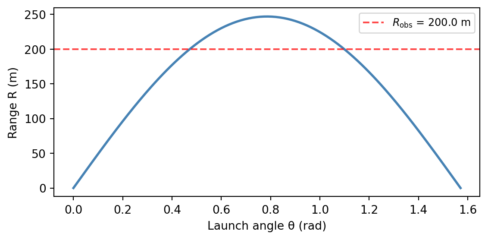
Near the peak (\(\theta = \pi/4\)), the curve is flat. This means many nearby angles map to nearly the same range. Uniform samples in \(\theta\) get compressed into a narrow band of \(R\) values there, producing high density. Conversely, where the curve is steep (near \(\theta = 0\) or \(\theta = \pi/2\)), samples spread out and density is low.
Task 1b: Inferring the launch angle
Adding an observe statement turns prior samples into weighted posterior samples — particles that are consistent with the data receive high weight, while unlikely ones are down-weighted. The resulting collection represents our beliefs after seeing the observation.
Part 1. Modify your model to condition on the observed range. Add an observe statement with a Gaussian likelihood: \[
R_{\text{obs}} \sim \mathsf{Normal}(R(\theta),\; \sigma)
\] where \(\sigma = 5.0\;\text{m}\) represents measurement uncertainty and \(R_{\text{obs}} = 200\;\text{m}\). Run inference with num_particles=10000 and inspect the result. What has changed compared to task 1a?
Part 2. The posterior samples carry importance weights. Plot a weighted histogram of the posterior over \(\theta\) by passing weights=... to ax.hist. The range equation \(R(\theta) = R_{\text{obs}}\) has two exact analytical solutions: \[
\theta_{\text{low}} = \tfrac{1}{2}\arcsin\!\left(\frac{R_{\text{obs}}\, g}{v_0^2}\right), \qquad \theta_{\text{high}} = \frac{\pi}{2} - \theta_{\text{low}}.
\] Compute these two angles and overlay them on your histogram as vertical dashed lines. What do you notice?
Part 3. One way to summarize a distribution is its mean. Use expectation() to compute \(\mathbb{E}[\theta \mid R_{\text{obs}}]\). Is the mean a useful summary here?
Discussion: How does the Bayesian posterior relate to the two exact solutions? What happens as the measurement noise \(\sigma \to 0\)?
NoteHint: Step-by-step approach
Part 1 — conditioning with observe:
Copy your
lunar_launchmodel and add two parameters:R_obsandsigma.After computing
R, add this line:observe(R_obs, dist.Normal(R, sigma))This tells the engine: “the observed range \(R_{\text{obs}}\) was drawn from a Normal centered at the predicted range \(R\)”. Particles whose predicted range is close to 200 m will receive high weight.
Run with
num_particles=10000:result_cond = lunar_launch_conditioned(R_obs, sigma, num_particles=10000)Note that
R_obsandsigmaare model arguments;num_particlesis intercepted by the engine.
Part 2 — weighted histogram with exact solutions:
When there are observe statements, particles carry importance weights. To plot a correct histogram, pass these weights to ax.hist:
thetas = result_cond["theta"]
log_w = result_cond["log_weights"]
weights = torch.softmax(log_w, dim=0) # exponentiate and normalize
ax.hist(thetas, weights=weights, bins=80, density=True, ...)Compute the exact angles and overlay them:
theta_low = 0.5 * torch.asin(torch.tensor(R_obs * g_moon / v0**2))
theta_high = torch.pi / 2 - theta_low
ax.axvline(float(theta_low), ...)
ax.axvline(float(theta_high), ...)Part 3 — posterior mean with expectation:
The expectation() function takes a result object and a function whose argument names match the sampled variable names:
E_theta = expectation(result_cond, lambda theta: theta)This returns the weighted posterior mean of \(\theta\).
TipSolution
# Part 1: Conditioned model
R_obs = 200.0
sigma = 5.0
@model
def lunar_launch_conditioned(R_obs, sigma):
theta = sample("theta", dist.Uniform(0, torch.pi / 2))
R = compute_range(v0, theta, g=g_moon)
observe(R_obs, dist.Normal(R, sigma))
result_cond = lunar_launch_conditioned(R_obs, sigma, num_particles=10000)
print(result_cond)
print(summary(result_cond)){'theta': tensor([0.1327, 0.3134, 0.3256, ..., 0.9235, 1.3449, 1.0242]), 'log_evidence': tensor(-5.4029), 'log_weights': tensor([-368.3360, -63.3900, -53.1761, ..., -30.7282, -172.6292,
-9.9591])}
{'theta': {'mean': tensor(0.7867), 'std': tensor(0.3130), 'n_unique': 9998}}We again have 10000 samples of theta, but now they come with non-uniform log_weights that reflect how well each particle’s predicted range matches the observed range. The log_evidence is now negative, indicating the marginal likelihood of the data under the model.
# Part 2: Compute normalized weights and exact solutions
thetas = result_cond["theta"]
log_w = result_cond["log_weights"]
weights = torch.softmax(log_w, dim=0)
theta_low = 0.5 * torch.asin(torch.tensor(R_obs * g_moon / v0**2))
theta_high = torch.pi / 2 - theta_lowWe plot the weighted posterior histogram of \(\theta\), with the exact analytical solutions overlaid:
Code
fig, ax = plt.subplots(figsize=(7, 3.5))
ax.hist(thetas, weights=weights, bins=80, density=True,
color="steelblue", edgecolor="white", linewidth=0.5, alpha=0.8, label="Posterior")
ax.axvline(float(theta_low), color="darkorange", linestyle="--", linewidth=2,
label=f"Exact low: θ = {float(theta_low):.2f} rad ({float(theta_low)*180/torch.pi:.0f}°)")
ax.axvline(float(theta_high), color="red", linestyle="--", linewidth=2,
label=f"Exact high: θ = {float(theta_high):.2f} rad ({float(theta_high)*180/torch.pi:.0f}°)")
ax.set_xlabel("Launch angle θ (rad)")
ax.set_ylabel("Density")
ax.legend(fontsize=9)
plt.tight_layout()
plt.show()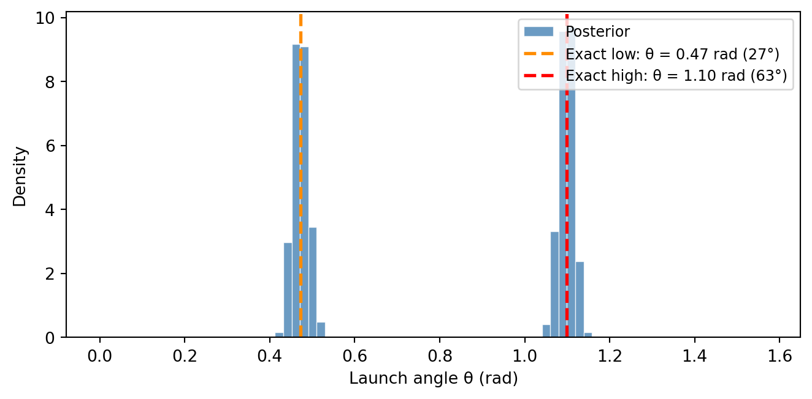
The posterior is bimodal, with two peaks centered on the exact analytical solutions. The Bayesian posterior automatically discovers both solutions and quantifies how plausible each one is. Because we used a uniform prior on theta, both modes have roughly equal mass. If we had used a prior that favored large angles, the high-arc solution would have received more weight.
# Part 3: Posterior mean of θ
E_theta = expectation(result_cond, lambda theta: theta)
print(f"E[θ] = {E_theta.item():.3f} rad ({E_theta.item()*180/torch.pi:.1f}°)")E[θ] = 0.787 rad (45.1°)The posterior mean \(\mathbb{E}[\theta] \approx \pi/4 \approx 45°\) does not correspond to any physical solution; it is the average of the low-arc (\(\sim 27°\)) and high-arc (\(\sim 63°\)) peaks. For multimodal posteriors, the mean can be misleading — histograms or samples are much more informative.
Discussion: The posterior concentrates around \(\theta_{\text{low}}\) and \(\theta_{\text{high}}\), with a spread controlled by the measurement noise \(\sigma\). As \(\sigma \to 0\), the posterior peaks sharpen into a pair of delta functions at the exact solutions.
Task 1c: Joint inference of \(v_0\) and \(\theta\)
So far we assumed the launch speed \(v_0 = 20\;\text{m/s}\) was known exactly. In practice, the launcher has some variability. Suppose we only know that \(v_0\) is somewhere between 15 and 25 m/s. Adding a second sample call gives us a joint posterior over both parameters.
Part 1. Write a new model lunar_launch_joint(R_obs, sigma) that:
- Samples a launch speed \(v_0 \sim \text{Uniform}(15, 25)\).
- Samples a launch angle \(\theta \sim \text{Uniform}(0, \pi/2)\).
- Computes the range \(R\) using
compute_range(v0, theta). - Conditions on the observed range using
observe(R_obs, dist.Normal(R, sigma)).
Run the model with \(R_{\text{obs}} = 200\), \(\sigma = 5.0\), and num_particles=10000. Inspect the results.
Part 2. Visualize the joint posterior of \((v_0, \theta)\) using seaborn’s sns.jointplot(). Since jointplot does not accept importance weights, you first need to resample: call .sample() on the result to convert the weighted particles into an equally-weighted collection. This draws indices proportional to the importance weights — high-weight particles get duplicated, low-weight ones are dropped.
What structure do you see in the joint?
Part 3. Posterior samples aren’t limited to the parameters themselves — we can plug them into any function to obtain samples of derived quantities. Use expectation() to estimate:
- The expected flight time \(\mathbb{E}[T \mid R_{\text{obs}}]\), where \(T = 2 v_0 \sin(\theta) / g\).
- The expected maximum altitude \(\mathbb{E}[h_{\max} \mid R_{\text{obs}}]\), where \(h_{\max} = v_0^2 \sin^2(\theta) / (2g)\).
- The probability that the cargo flies above 100 m: \(P(h_{\max} > 100\;\text{m} \mid R_{\text{obs}})\).
To visualize the full posterior over these derived quantities (not just their means), compute \(T\) and \(h_{\max}\) for the resampled particles and plot histograms.
NoteHint: Step-by-step approach
Part 1 — multi-parameter model:
The model is a straightforward extension of the conditioned model from Task 1b. The only change is adding a second sample call:
v0 = sample("v0", dist.Uniform(15.0, 25.0))Place this before compute_range, which now uses the sampled v0 instead of a fixed constant.
Part 2 — joint plot with seaborn:
The posterior particles carry importance weights. Since jointplot works with unweighted samples, use the .sample() method on the result to resample — drawing indices proportional to the weights to produce an equally-weighted collection:
resampled = result_joint.sample()
v0_resampled = resampled["v0"]
theta_resampled = resampled["theta"]Now pass the unweighted samples to seaborn:
sns.jointplot(x=v0_resampled.numpy(), y=theta_resampled.numpy(), kind="scatter")Try different kind options: "scatter", "kde", "hex".
Part 3 — derived quantities from posterior samples:
The expectation() function matches argument names to variable names in the result. To compute a function of multiple variables, use a lambda with matching argument names:
E_T = expectation(result_joint, lambda v0, theta: 2 * v0 * torch.sin(theta) / g_moon)For a probability, pass an indicator function:
expectation(result_joint, lambda v0, theta: (h_max_expr > 100).float())For the histograms, plug the resampled posterior samples into the formulas for \(T\) and \(h_{\max}\). Each resampled particle gives one sample of the derived quantity:
T_samples = 2 * v0_resampled * torch.sin(theta_resampled) / g_moon
hmax_samples = v0_resampled**2 * torch.sin(theta_resampled)**2 / (2 * g_moon)
TipSolution
# Part 1: Joint model
R_obs = 200.0
sigma = 5.0
@model
def lunar_launch_joint(R_obs, sigma):
v0 = sample("v0", dist.Uniform(15.0, 25.0))
theta = sample("theta", dist.Uniform(0, torch.pi / 2))
R = compute_range(v0, theta, g=g_moon)
observe(R_obs, dist.Normal(R, sigma))
result_joint = lunar_launch_joint(R_obs, sigma, num_particles=10000)
print(summary(result_joint)){'v0': {'mean': tensor(20.0800), 'std': tensor(2.0329), 'n_unique': 9989}, 'theta': {'mean': tensor(0.7837), 'std': tensor(0.3041), 'n_unique': 10000}}The result now contains samples of both v0 and theta, along with their corresponding log_weights. Note that the samples are paired: the first sample of v0 corresponds to the first sample of theta, and so on. The collection of pairs \((v_0, \theta)\) represents the joint posterior distribution.
# Part 2: Resample particles proportional to weights
resampled = result_joint.sample()
v0_resampled = resampled["v0"]
theta_resampled = resampled["theta"]We create a joint plot showing the posterior distribution of \((v_0, \theta)\):
Code
sns.jointplot(
x=v0_resampled.numpy(),
y=theta_resampled.numpy(),
kind="scatter",
joint_kws={"s": 5, "alpha": 0.3},
marginal_kws={"bins": 60},
color="steelblue",
height=6,
)
plt.xlabel("$v_0$ (m/s)")
plt.ylabel("θ (rad)")
plt.tight_layout()
plt.show()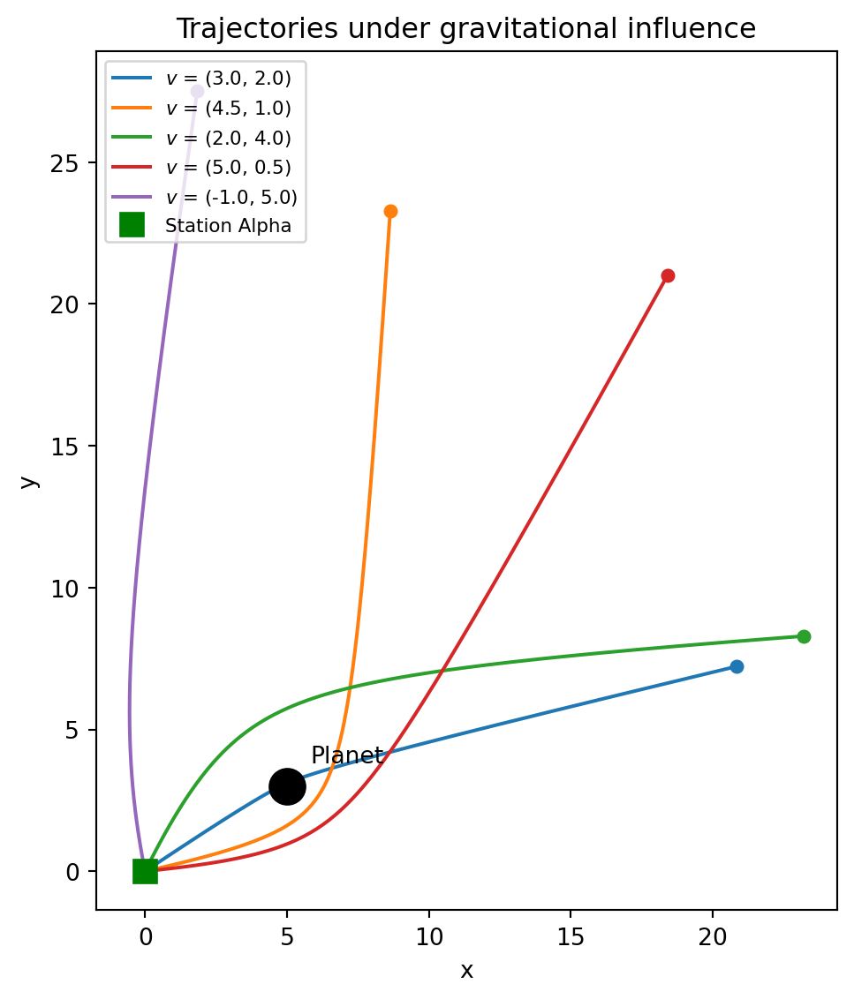
The joint posterior reveals a horseshoe shape. The marginal for \(v_0\) is concentrated around \(18 \, \text{m/s}\) since in that region, the two modes in \(\theta\) merge into a single broad peak. The marginal for \(\theta\) looks uniform.
Next, we compute the expected flight time, expected maximum altitude, and probability of flying above 100 m:
# Part 3: Operational quantities from the joint posterior
E_T = expectation(result_joint,
lambda v0, theta: 2 * v0 * torch.sin(theta) / g_moon)
E_hmax = expectation(result_joint,
lambda v0, theta: v0**2 * torch.sin(theta)**2 / (2 * g_moon))
P_high = expectation(result_joint,
lambda v0, theta: (v0**2 * torch.sin(theta)**2 / (2 * g_moon) > 100).float())
print(f"E[flight time] = {E_T.item():.1f} s")
print(f"E[max altitude] = {E_hmax.item():.1f} m")
print(f"P(h_max > 100 m) = {P_high.item():.2f}")E[flight time] = 16.6 s
E[max altitude] = 62.6 m
P(h_max > 100 m) = 0.19Finally, we plot histograms of the posterior distributions of flight time and maximum altitude. For this we first compute \(T\) and \(h_{\max}\) for each resampled particle, then plot histograms:
# Part 3 (continued): Compute derived trajectory quantities
T_samples = 2 * v0_resampled * torch.sin(theta_resampled) / g_moon
hmax_samples = v0_resampled**2 * torch.sin(theta_resampled) ** 2 / (2 * g_moon)Code
fig, axes = plt.subplots(1, 2, figsize=(7, 3))
axes[0].hist(
T_samples.numpy(),
bins=60,
density=True,
color="steelblue",
edgecolor="white",
linewidth=0.5,
alpha=0.8,
)
axes[0].set_xlabel("Flight time (s)")
axes[0].set_ylabel("Density")
axes[1].hist(
hmax_samples.numpy(),
bins=60,
density=True,
color="steelblue",
edgecolor="white",
linewidth=0.5,
alpha=0.8,
)
axes[1].axvline(
100.0, color="red", linestyle="--", linewidth=2, label="100 m threshold"
)
axes[1].set_xlabel("Maximum altitude (m)")
axes[1].set_ylabel("Density")
axes[1].legend(fontsize=9)
plt.tight_layout()
plt.show()
Visually, the probability of flying above 100 m is the total area to the right of the red dashed line in the second histogram.
Vignette 2: Gravitational Slingshot
A space probe was launched from Station Alpha (located at the origin) to explore a region of space. A massive planet at position \((p_x, p_y) = (5, 3)\) bends all nearby trajectories through its gravitational pull. After \(T\) seconds, a sensor detected the probe at coordinates \((x_T, y_T)\).
Given the observed endpoint, what was the probe’s initial velocity?
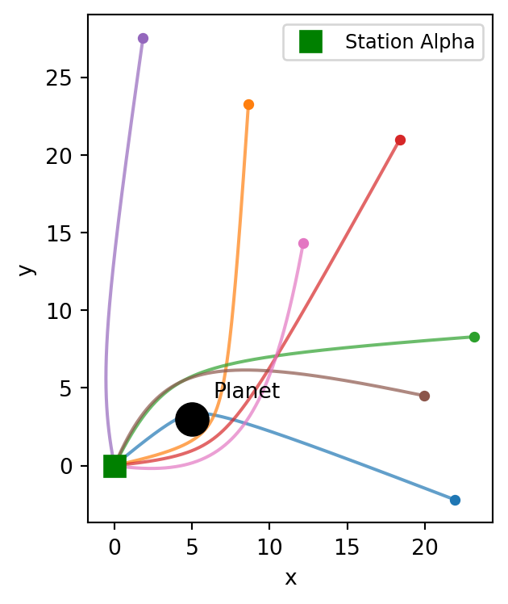
NoteProvided helper function: gravity simulation
The following function is provided for you. Run this cell before starting the tasks.
def simulate_gravity(x0, y0, vx0, vy0,
planet_x, planet_y, planet_mass,
dt=0.02, n_steps=300, softening=0.5):
"""Simulate a 2D trajectory under Newtonian gravity using leapfrog integration.
All positional/velocity arguments can be tensors of shape (N,) to simulate
N particles in parallel.
Args:
x0, y0: initial position
vx0, vy0: initial velocity
planet_x, planet_y: position of the massive body
planet_mass: gravitational parameter GM of the planet
dt: time step
n_steps: number of integration steps
softening: softening length ε to prevent singularity at r=0;
force ∝ 1/(r² + ε²)
Returns:
(xs, ys) — tensors of shape (n_steps, N) giving the trajectory
"""
x = x0.clone() if isinstance(x0, torch.Tensor) else torch.tensor(x0).float()
y = y0.clone() if isinstance(y0, torch.Tensor) else torch.tensor(y0).float()
vx = vx0.clone() if isinstance(vx0, torch.Tensor) else torch.tensor(vx0).float()
vy = vy0.clone() if isinstance(vy0, torch.Tensor) else torch.tensor(vy0).float()
# Broadcast all inputs to the same shape so that torch.stack works
x, y, vx, vy = torch.broadcast_tensors(x, y, vx, vy)
x, y, vx, vy = x.clone(), y.clone(), vx.clone(), vy.clone()
xs_list = []
ys_list = []
for _ in range(n_steps):
xs_list.append(x.clone())
ys_list.append(y.clone())
dx = x - planet_x
dy = y - planet_y
r2 = dx**2 + dy**2 + softening**2
r = torch.sqrt(r2)
acc = -planet_mass / r2
ax = acc * dx / r
ay = acc * dy / r
# Leapfrog: kick-drift-kick
vx = vx + 0.5 * ax * dt
vy = vy + 0.5 * ay * dt
x = x + vx * dt
y = y + vy * dt
dx = x - planet_x
dy = y - planet_y
r2 = dx**2 + dy**2 + softening**2
r = torch.sqrt(r2)
acc = -planet_mass / r2
ax = acc * dx / r
ay = acc * dy / r
vx = vx + 0.5 * ax * dt
vy = vy + 0.5 * ay * dt
xs = torch.stack(xs_list) # shape (n_steps, ...)
ys = torch.stack(ys_list)
return xs, ysTask 2a: Forward simulation
As before, we start by drawing from the prior — sampling velocities and running the simulation — to understand what outcomes are possible before any data is observed.
Part 1. Write a @model function probe_launch() that:
- Samples initial velocity components \(v_x \sim \text{Normal}(0, 3)\) and \(v_y \sim \text{Normal}(0, 3)\).
- Simulates the trajectory using
simulate_gravitywith launch from origin, planet at \((5, 3)\) withplanet_mass = 30, time stepdt = 0.02, andn_steps = 300. - Records the final position \((x_T, y_T)\) using two deterministic variables:
deterministic("final_x", xs[-1])anddeterministic("final_y", ys[-1]).
Run the model with num_particles=5000 and inspect the result.
Part 2. Extract the endpoints from the result and plot a scatter of the prior distribution of endpoints (final \((x_T, y_T)\) for all particles). Where is the density highest? How does the planet’s gravity shape the distribution?
Part 3. Select 20 random particles from the result and plot their trajectories on a single figure. Mark the planet’s position with a large dot and Station Alpha at the origin.
NoteHint: Step-by-step approach
Part 1 — writing and running the model:
Define constants
planet_x, planet_y = 5.0, 3.0andplanet_mass = 30.0.Write a function decorated with
@model. Inside, usesample("vx", dist.Normal(0.0, 3.0))and similarly forvy, then callsimulate_gravity. Finally, usedeterministic("final_x", xs[-1])anddeterministic("final_y", ys[-1])to record the final position.Call the model with
num_particles=5000:result = probe_launch(num_particles=5000)The result is dictionary-like:
result["vx"]andresult["vy"]are tensors of shape(5000,).
Part 2 — scatter of endpoints:
The deterministic sites "final_x" and "final_y" are stored in the result. Extract them with result["final_x"] and result["final_y"] — each is a tensor of shape (5000,).
Part 3 — plotting trajectories:
- Extract the velocities:
vx_samples = result["vx"],vy_samples = result["vy"]. - Pick 20 random indices:
idx = torch.randperm(len(vx_samples))[:20]. - Re-run
simulate_gravityfor the selected particles and plot each trajectory.
TipSolution
planet_x, planet_y = 5.0, 3.0
planet_mass = 30.0
@model
def probe_launch():
vx = sample("vx", dist.Normal(0.0, 3.0))
vy = sample("vy", dist.Normal(0.0, 3.0))
xs, ys = simulate_gravity(
x0=0.0,
y0=0.0,
vx0=vx,
vy0=vy,
planet_x=planet_x,
planet_y=planet_y,
planet_mass=planet_mass,
dt=0.02,
n_steps=300,
)
deterministic("final_x", xs[-1])
deterministic("final_y", ys[-1])
result_probe = probe_launch(num_particles=5000)
print(summary(result_probe)){'vx': {'mean': tensor(0.0499), 'std': tensor(2.9803), 'n_unique': 5000}, 'vy': {'mean': tensor(-0.0364), 'std': tensor(3.0503), 'n_unique': 4999}, 'final_x': {'mean': tensor(3.7868), 'std': tensor(16.0433), 'n_unique': 5000}, 'final_y': {'mean': tensor(1.9873), 'std': tensor(15.8321), 'n_unique': 5000}}# Part 2: Extract endpoints from the result
final_x = result_probe["final_x"]
final_y = result_probe["final_y"]We scatter-plot the prior distribution of endpoints:
Code
fig, ax = plt.subplots(figsize=(6, 6))
ax.scatter(final_x, final_y, s=3, alpha=0.3, color="steelblue")
ax.plot(planet_x, planet_y, "ko", markersize=12, zorder=5)
ax.plot(0, 0, "s", color="green", markersize=8, zorder=5, label="Station Alpha")
ax.set_xlabel("Final x")
ax.set_ylabel("Final y")
ax.set_title("Prior distribution of endpoints")
ax.set_aspect("equal")
ax.legend(fontsize=9)
plt.tight_layout()
plt.show()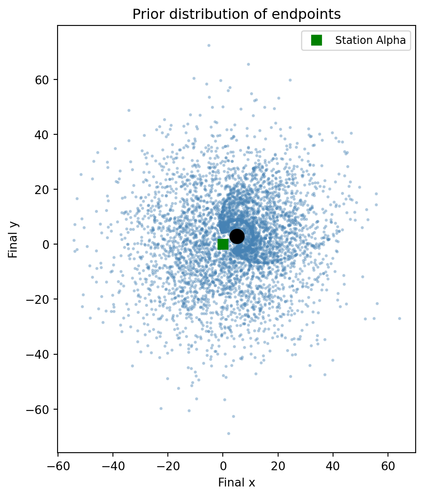
The planet acts as a gravitational lens: many trajectories are funneled around it, producing high density near the planet and a distinctive pattern of endpoint clustering. Probes with low initial speed tend to end up close to the planet, while faster probes fly past it in various directions.
# Part 3: Re-simulate 20 random trajectories
vx_samples = result_probe["vx"]
vy_samples = result_probe["vy"]
idx = torch.randperm(len(vx_samples))[:20]
all_xs, all_ys = simulate_gravity(
x0=0.0, y0=0.0,
vx0=vx_samples[idx], vy0=vy_samples[idx],
planet_x=planet_x, planet_y=planet_y,
planet_mass=planet_mass,
dt=0.02, n_steps=300,
)We plot the selected trajectories:
Code
fig, ax = plt.subplots(figsize=(6, 4))
for j in range(20):
ax.plot(all_xs[:, j], all_ys[:, j], linewidth=1.5)
ax.plot(float(all_xs[-1, j]), float(all_ys[-1, j]), "o", markersize=4)
ax.plot(planet_x, planet_y, "ko", markersize=15, zorder=5)
ax.plot(0, 0, "s", color="green", markersize=10, zorder=5, label="Station Alpha")
ax.set_xlabel("x")
ax.set_ylabel("y")
ax.set_aspect("equal")
ax.legend(fontsize=9)
plt.tight_layout()
plt.show()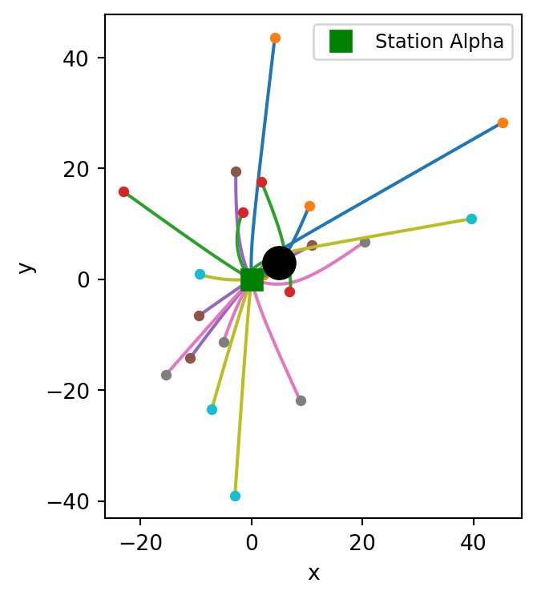
Task 2b: Inferring the initial velocity
Adding an observe statement turns the prior samples into weighted posterior samples. In this two-dimensional setting, the observation scores each particle’s simulated endpoint against the data.
Suppose the probe was detected at \((x_T, y_T) = (8.0, 1.0)\) with measurement uncertainty \(\sigma = 1.0\) in each coordinate.
Part 1. Write a new model probe_conditioned(x_obs, y_obs, sigma) that takes the observed coordinates and measurement noise as arguments. As before, record the final coordinates with deterministic. Since the observation is two-dimensional, combine both coordinates into a single observe call using a multivariate normal:
final_x = deterministic("final_x", xs[-1])
final_y = deterministic("final_y", ys[-1])
endpoint = torch.stack([final_x, final_y], dim=-1)
obs_vec = torch.tensor([x_obs, y_obs])
observe(obs_vec, dist.MultivariateNormal(endpoint, sigma**2 * torch.eye(2)))
WarningWhy not two separate observe calls?
The inference engine can trigger a resampling step after each observe. If you write two calls — first for \(x\), then for \(y\) — the engine resamples particles after scoring \(x\) alone. This discards particles that happen to have a poor \(x\) match, even if they would have had an excellent \(y\) match. The result is a severe loss of particle diversity and a degraded posterior.
By combining both coordinates into a single observe with a multivariate normal, the engine scores the full 2D likelihood at once and resamples only afterward, preserving particles that are globally good.
Run inference with num_particles=10000 and use summary() to inspect the result.
Part 2. The posterior particles carry importance weights. To work with standard plotting tools, resample with .sample() to get equally-weighted particles. Create two plots:
- A joint plot of the posterior over initial velocities \((v_x, v_y)\) using
sns.jointplot. - An overlay of 500 resampled posterior trajectories, marking the observed endpoint, the planet, and Station Alpha.
Part 3. The posterior over velocities gives us more than just velocity estimates — we can re-simulate each posterior trajectory and compute derived quantities that depend on the entire path. Plugging posterior samples into the simulation produces new samples representing the posterior distribution over these quantities.
Using the resampled posterior velocities, compute and report:
- The expected closest approach to the planet: \(\mathbb{E}[d_{\min} \mid \text{obs}]\), where \(d_{\min} = \min_t \|\mathbf{r}(t) - \mathbf{r}_{\text{planet}}\|\).
- The expected maximum speed during transit: \(\mathbb{E}[v_{\max} \mid \text{obs}]\).
- The probability that the probe passed within 1 unit of the planet (a “danger zone”): \(P(d_{\min} < 1 \mid \text{obs})\).
Plot histograms of \(d_{\min}\) and \(v_{\max}\) across the posterior samples.
Discussion: Unlike the lunar launcher, where the posterior over \(\theta\) was bimodal with well-separated peaks, the gravity problem has a two-dimensional velocity space. Do you see multiple clusters in the posterior? What do they correspond to physically?
NoteHint: Step-by-step approach
Part 1 — conditioning with a single 2D observe:
Combine the \(x\) and \(y\) observations into one observe call. First record the final coordinates as deterministic sites, then stack them:
final_x = deterministic("final_x", xs[-1])
final_y = deterministic("final_y", ys[-1])
endpoint = torch.stack([final_x, final_y], dim=-1)
obs_vec = torch.tensor([x_obs, y_obs])
observe(obs_vec, dist.MultivariateNormal(endpoint, sigma**2 * torch.eye(2)))This creates a 2D isotropic Gaussian likelihood, scoring both coordinates jointly.
Part 2 — joint plot and trajectories:
The posterior particles carry importance weights. Use .sample() to resample into equally-weighted particles:
resampled = result_cond.sample()
vx_resampled = resampled["vx"]
vy_resampled = resampled["vy"]Then pass to seaborn:
sns.jointplot(x=vx_resampled.numpy(), y=vy_resampled.numpy(), kind="scatter")For trajectories, plug the resampled posterior velocities into simulate_gravity: pick 500 of them, re-run the simulation, and plot each trajectory with a low alpha.
Part 3 — derived quantities from re-simulation:
Re-simulate all resampled posterior trajectories (you already have post_xs and post_ys from Part 2). Plugging the posterior velocity samples into the simulation gives new samples representing the posterior distribution over trajectory-level quantities. For each trajectory, compute:
- Closest approach: distance from the planet at each time step, then take the minimum.
- Maximum speed: compute velocity at each step from finite differences, then take the max.
# Closest approach to planet
dx = post_xs - planet_x
dy = post_ys - planet_y
dist_to_planet = torch.sqrt(dx**2 + dy**2) # shape (n_steps, N)
d_min = dist_to_planet.min(dim=0).values # shape (N,)For speed, use finite differences on position:
vx_traj = (post_xs[1:] - post_xs[:-1]) / dt
vy_traj = (post_ys[1:] - post_ys[:-1]) / dt
speed = torch.sqrt(vx_traj**2 + vy_traj**2)
v_max = speed.max(dim=0).values
TipSolution
# Part 1: Conditioned model
x_obs, y_obs = 8.0, 1.0
obs_sigma = 1.0
@model
def probe_conditioned(x_obs, y_obs, sigma):
vx = sample("vx", dist.Normal(0.0, 3.0))
vy = sample("vy", dist.Normal(0.0, 3.0))
xs, ys = simulate_gravity(
x0=0.0, y0=0.0, vx0=vx, vy0=vy,
planet_x=planet_x, planet_y=planet_y,
planet_mass=planet_mass,
dt=0.02, n_steps=300,
)
final_x = deterministic("final_x", xs[-1])
final_y = deterministic("final_y", ys[-1])
endpoint = torch.stack([final_x, final_y], dim=-1)
obs_vec = torch.tensor([x_obs, y_obs])
observe(obs_vec, dist.MultivariateNormal(endpoint, sigma**2 * torch.eye(2)))
result_cond = probe_conditioned(x_obs, y_obs, obs_sigma, num_particles=10000)
print(summary(result_cond)){'vx': {'mean': tensor(-0.5231), 'std': tensor(0.6801), 'n_unique': 9999}, 'vy': {'mean': tensor(0.0131), 'std': tensor(1.3552), 'n_unique': 9998}, 'final_x': {'mean': tensor(8.0541), 'std': tensor(1.1052), 'n_unique': 9998}, 'final_y': {'mean': tensor(0.7995), 'std': tensor(0.9871), 'n_unique': 10000}}# Part 2: Resample particles proportional to weights
resampled = result_cond.sample()
vx_resampled = resampled["vx"]
vy_resampled = resampled["vy"]We visualize the joint posterior over initial velocities:
Code
sns.jointplot(
x=vx_resampled.numpy(),
y=vy_resampled.numpy(),
kind="scatter",
joint_kws={"s": 5, "alpha": 0.3},
marginal_kws={"bins": 60},
color="steelblue",
height=6,
)
plt.xlabel("$v_x$ (initial)")
plt.ylabel("$v_y$ (initial)")
plt.tight_layout()
plt.show()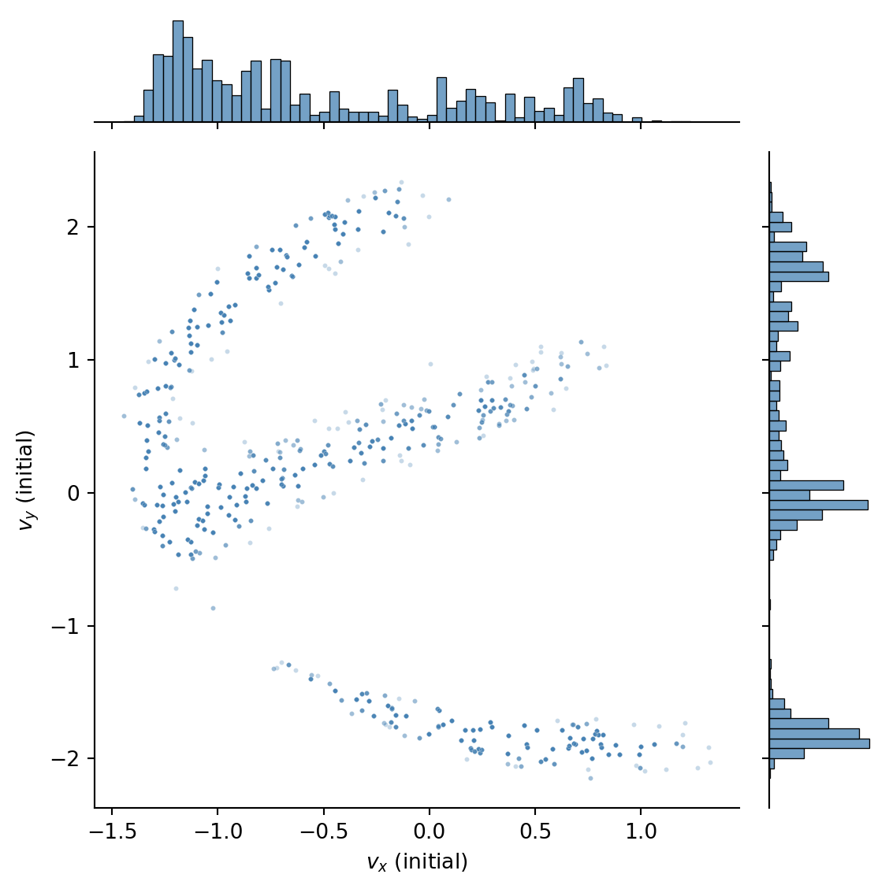
We can see that there are three clusters in the posterior, corresponding to three qualitatively different paths that could have produced the observed endpoint.
We can visualize the corresponding trajectories by re-simulating the probe’s path for each resampled velocity and plotting them:
Code
idx = torch.randperm(len(vx_resampled))[:500]
post_xs, post_ys = simulate_gravity(
x0=0.0, y0=0.0,
vx0=vx_resampled[idx], vy0=vy_resampled[idx],
planet_x=planet_x, planet_y=planet_y,
planet_mass=planet_mass,
dt=0.02, n_steps=300,
)
fig, ax = plt.subplots(figsize=(6, 4))
for j in range(len(idx)):
ax.plot(post_xs[:, j], post_ys[:, j], color="steelblue", alpha=0.05, linewidth=0.8)
ax.plot(x_obs, y_obs, "*", color="red", markersize=15, zorder=5, label="Observed endpoint")
ax.plot(planet_x, planet_y, "ko", markersize=12, zorder=5)
ax.plot(0, 0, "s", color="green", markersize=8, zorder=5, label="Station Alpha")
ax.set_xlabel("x")
ax.set_ylabel("y")
ax.set_title("Posterior trajectories (500 resampled)")
ax.legend(fontsize=9)
ax.set_aspect("equal")
plt.tight_layout()
plt.show()
# Part 3: Trajectory-level posterior quantities
# Use all resampled trajectories (re-simulate with full resample for better statistics)
all_post_xs, all_post_ys = simulate_gravity(
x0=0.0,
y0=0.0,
vx0=vx_resampled,
vy0=vy_resampled,
planet_x=planet_x,
planet_y=planet_y,
planet_mass=planet_mass,
dt=0.02,
n_steps=300,
)
# Closest approach to planet
dx = all_post_xs - planet_x
dy = all_post_ys - planet_y
dist_to_planet = torch.sqrt(dx**2 + dy**2)
d_min = dist_to_planet.min(dim=0).values
# Maximum speed (finite differences)
dt = 0.02
vx_traj = (all_post_xs[1:] - all_post_xs[:-1]) / dt
vy_traj = (all_post_ys[1:] - all_post_ys[:-1]) / dt
speed = torch.sqrt(vx_traj**2 + vy_traj**2)
v_max = speed.max(dim=0).values
print(f"E[d_min | obs] = {d_min.mean().item():.2f}")
print(f"E[v_max | obs] = {v_max.mean().item():.2f}")
print(f"P(d_min < 1) = {(d_min < 1).float().mean().item():.2f}")E[d_min | obs] = 2.11
E[v_max | obs] = 5.82
P(d_min < 1) = 0.38We plot histograms of closest approach and maximum speed across the posterior:
Code
fig, axes = plt.subplots(1, 2, figsize=(7, 3))
axes[0].hist(
d_min.numpy(),
bins=60,
density=True,
color="steelblue",
edgecolor="white",
linewidth=0.5,
alpha=0.8,
)
axes[0].axvline(
1.0, color="red", linestyle="--", linewidth=2, label="Danger zone (r=1)"
)
axes[0].set_xlabel("Closest approach to planet")
axes[0].set_ylabel("Density")
axes[0].legend(fontsize=9)
axes[1].hist(
v_max.numpy(),
bins=60,
density=True,
color="steelblue",
edgecolor="white",
linewidth=0.5,
alpha=0.8,
)
axes[1].set_xlabel("Maximum speed during transit")
axes[1].set_ylabel("Density")
plt.tight_layout()
plt.show()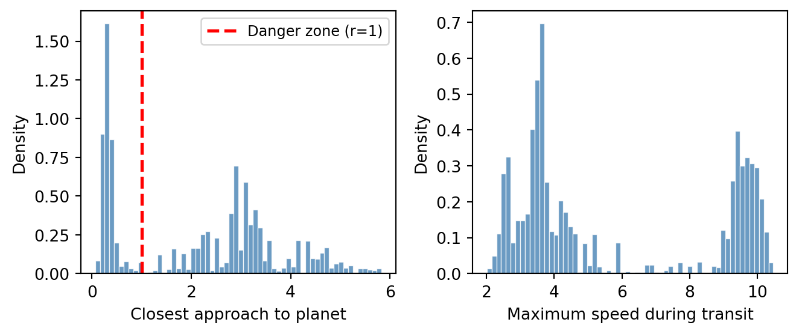
These derived quantities are obtained by plugging posterior velocity samples into the simulation and computing functions of the resulting trajectories. Each sample gives one value, so the collection represents the full posterior distribution over that quantity. We can see that the distributions are quite complex, so it would be difficult to summarize them with a point or interval estimate alone.